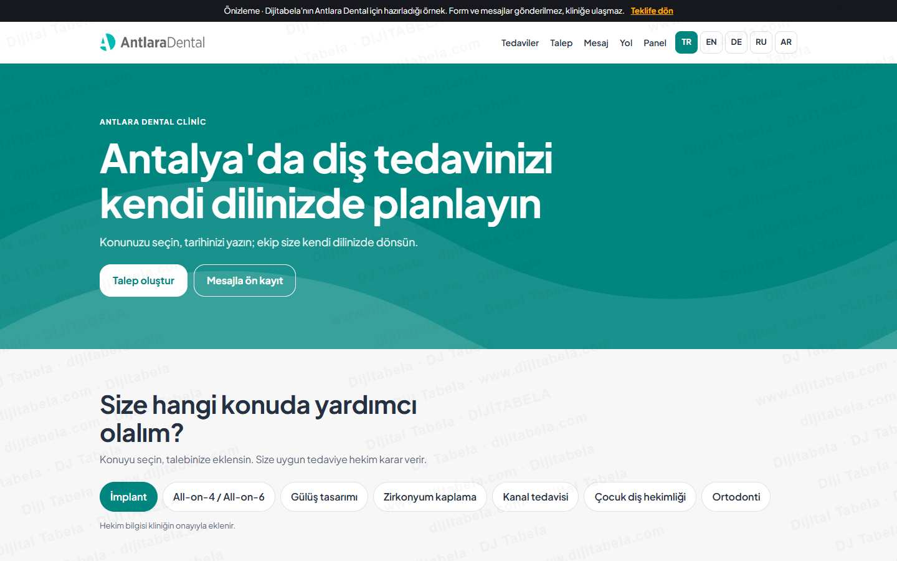
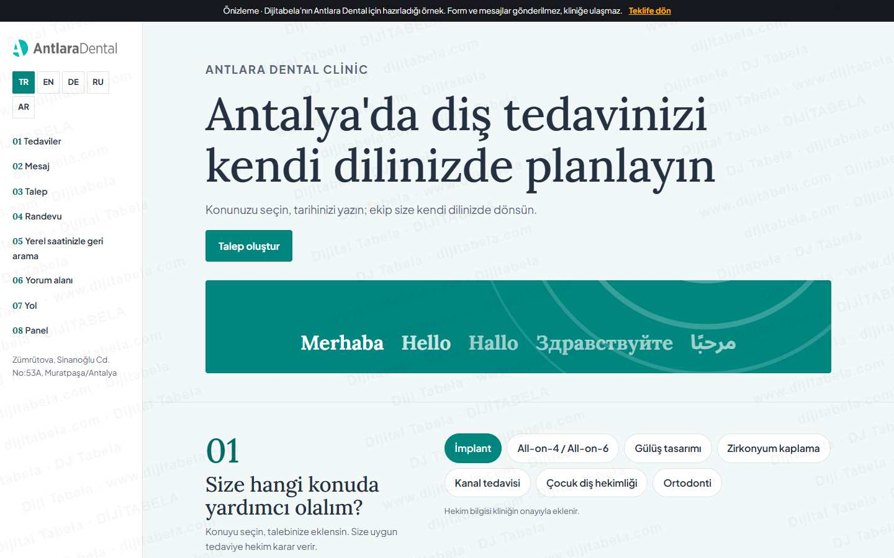
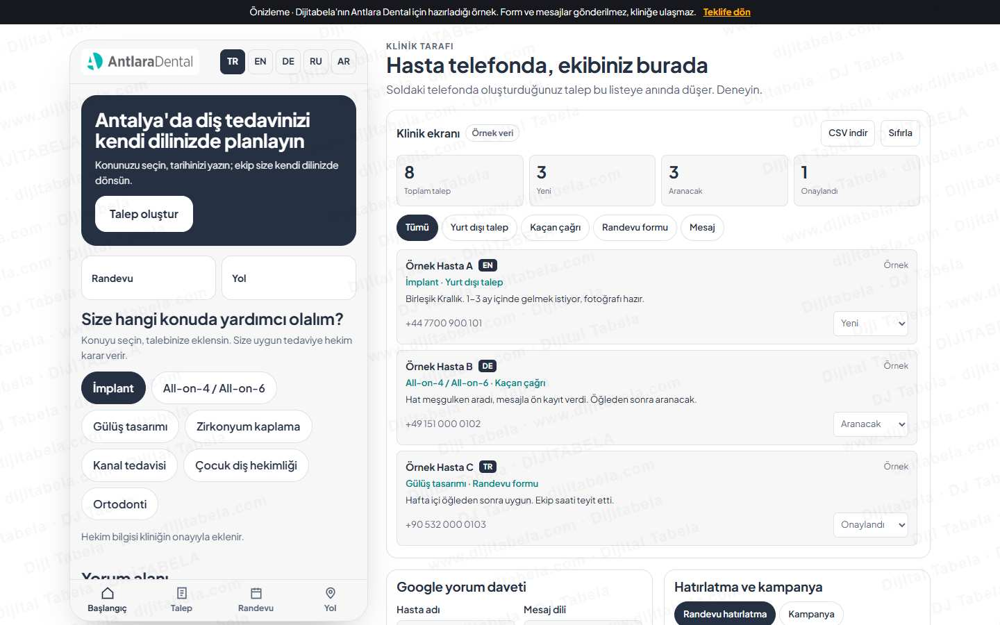

Antlara Dental: eksikler, çözüm, prototip, fiyat
Google'da 4,9 ve 1.199 yorum, çok dilli sayfalar ve 432 sayfalık site haritası güçlü bir temel.
1. Gördüğümüz eksikler
Hepsi herkese açık sayfalardan, 4 Kasım 2026'da tek ölçümle görüldü. Yanılıyorsak düzeltiriz.
Sitedeki bağlantı instagram.com/antlaradis açılınca "Profile mevcut değil" diyor. Asıl hesap @antlaradental (32 bin takipçi).
Nerede: Site alt bilgiÇözüm: Bağlantı doğru hesaba alınır.
390 px ölçümde sayfa 9,75 sn'de tamamlandı; 153 istek ve 4,2 MB indirildi.
Nerede: Ana sayfa, mobilÇözüm: Görsel ve kod yükü azaltılır.
EN, DE, RU, NL, PL sayfaları var ama hreflang etiketi yok. Yanlış dil sayfası çıkabilir.
Nerede: Ana sayfa kaynağıÇözüm: Her dile hreflang eklenir.
Ana sayfa kaynağında JSON-LD bulunmadı.
Nerede: Ana sayfa kaynağıÇözüm: Dentist şeması eklenir.
Bağlantı hazır metinsiz açılıyor (send?phone=905411204208).
Nerede: Ana sayfaÇözüm: Ön kayıt akışı konuyu ve dili önce sorar.
176 video ve 475 abone; Instagram'da 32 bin takipçi.
Nerede: YouTube kanal sayfasıÇözüm: Video dağıtım planı (isteğe bağlı).
Doğrulayamadıklarımız
- Google PageSpeed puanı (Google servisi 429 döndü)
- TikTok hesabı (sayfa içeriği gelmedi)
- Instagram son paylaşım tarihi
- Formun gerçekten çalıştığı (göndermedik)
2. Size önerdiğimiz çözüm
Üç hat yayında. Meşgul hatta arayana kendi dilinde mesaj gider.
Sitede Sağlık Turizmi başlığı var; talep tek dosyada toplanır.
Sitede Londra adresi var; saat farkı otomatik gösterilir.
Saat seçilir, ekip onaylar; panele düşer.
Kanal fark etmeden tek liste.
3. Çalışan prototip: 3 ayrı yerleşim
Üçü de çalışır. Formu doldurun, talep panele düşsün. Hiçbir bilgi gönderilmez, kliniğinize ulaşmaz.

Üst menü, geniş açılış, sırayla bölümler. Hasta kaydırarak ilerler.
Vitrin yerleşimi: tam ekran fotoğrafAç ve dene
Yan menü, numaralı bölümler, sakin okuma düzeni.
Dergi yerleşimi: çerçeveli fotoğraf, numaralı bölümlerAç ve dene
Telefon görünümü, alt sekmeler. Masaüstünde yanında canlı klinik ekranı.
Uygulama yerleşimi: kartlar, açılır paneller, alt menüAç ve dene4. Fiyat
| Çok dilli talep ve randevu sistemi (5 dil, huni, ön kayıt) | 14.900 TL |
| Klinik paneli | 29.900 TL |
| Site düzeltmeleri: Instagram bağlantısı, hreflang, yapı verisi, hız (6 saat × 1.500 TL) | 9.000 TL |
| Toplam | 53.800 TL |
Fiyatlar tek seferliktir. KDV dahil değildir.
Geçerlilik: Bu teklif 15 gün geçerlidir (19 Kasım 2026 sonuna kadar).
Süre: Sözleşme ve içerik tesliminden sonra iş takvimi birlikte yazılır.
Sınır: Tıbbi içerik ve onay metinleri kliniğin sorumluluğundadır. KVKK uyumu klinikle ayrıca netleştirilir; sonuç veya hasta sayısı garantisi verilmez.
İsteğe bağlı ekler
Eklerin fiyatları da KDV hariçtir. Aylık hizmetlerde her Ocak TÜFE kadar güncelleme uygulanır.